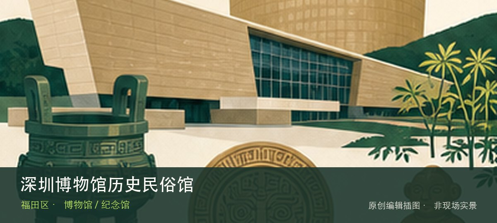

适合谁
适合第一次系统认识深圳、亲子研学和城市史爱好者；至少预留两小时。

编辑配图·非现场实景SHENZHEN GUIDE · 017
市民中心 · 博物馆 / 纪念馆
深圳博物馆历史民俗馆位于市民中心 A 区，以深圳地区历史、近现代城市发展和民俗生活为主线，是理解这座移民城市从地域社会走向现代都市的基础场馆。理解这处场馆，重点不是把所有展柜看完，而是沿着深圳古代历史线和近现代城市发展展两条线索辨认其专题边界。常设展、开放楼层和时段可能调整，专程前往前仍应核对场馆当天公告。
WHY GO
适合第一次系统认识深圳、亲子研学和城市史爱好者；至少预留两小时。
先走历史时间线，再选改革开放或民俗展区深化；周一闭馆，节假日提前核对预约。
公共交通先到市民中心 A 区片区，再以深圳博物馆历史民俗馆公开参观入口为终点；校园、园区或预约型场馆须同时核对门禁与开放日。
自驾优先使用深圳博物馆历史民俗馆所属建筑、园区或邻近正规公共停车场；预约时一并确认车牌登记、门岗和社会车辆准入规则。
全年可安排，尤其适合高温或降雨日；台风、极端天气及布展期仍可能临时调整开放。
NEARBY IDEAS